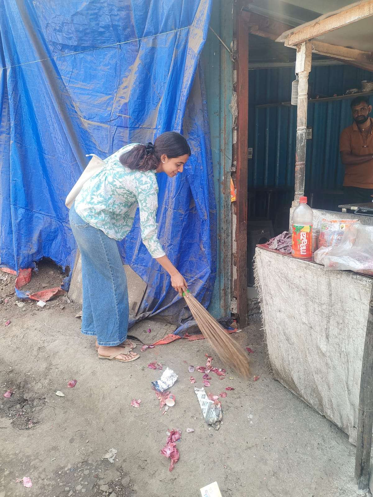
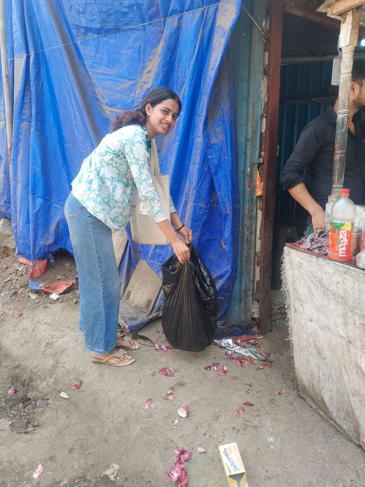
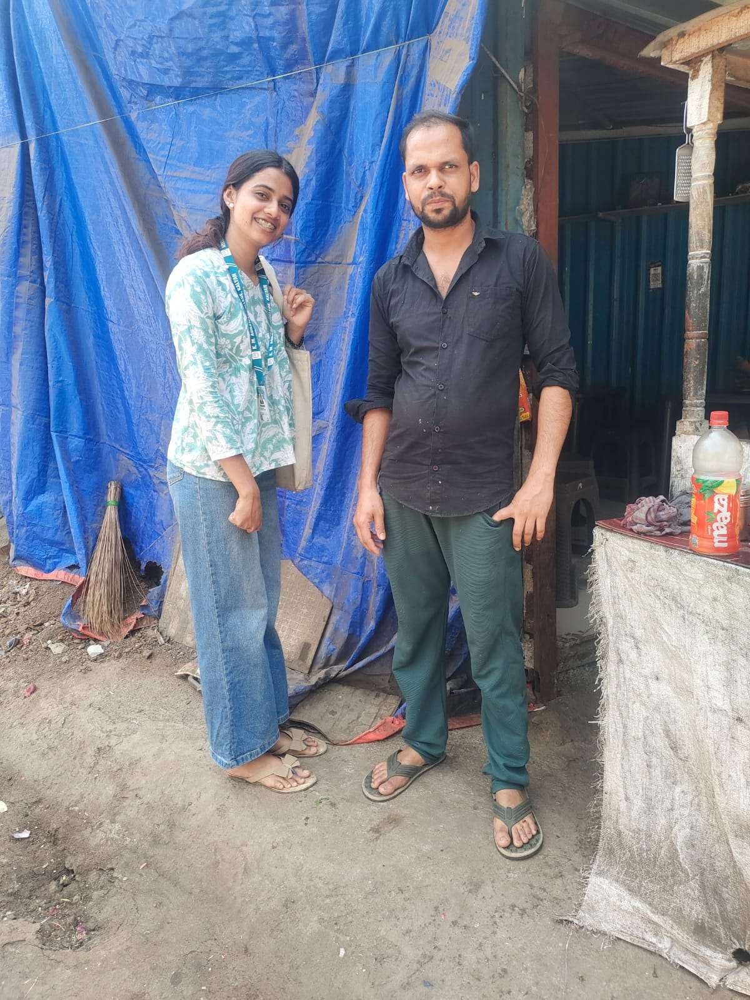

01
Observe the space
We visited a commonly used public area and noted scattered wrappers, plastic waste, disposable cups, and waste-disposal concerns.
FIELD OBSERVATIONSmall acts of care can change the places we share. This student-led project explores how volunteering, civic awareness, and responsible waste habits can make public spaces healthier for everyone.

WHY THIS PROJECT MATTERS
Roadsides, markets, parks, and neighbourhood corners are part of everyday life. Littering and improper waste disposal affect the appearance of these spaces, the environment, and community well-being.
Our Community Engagement Project focused on observing a public area, taking part in a cleanliness drive, and speaking with residents and shopkeepers about practical ways to improve civic hygiene.
Discover the process →FROM OBSERVATION TO ACTION
The project used field observation, informal community interaction, and hands-on participation to understand local cleanliness challenges.
We visited a commonly used public area and noted scattered wrappers, plastic waste, disposable cups, and waste-disposal concerns.
FIELD OBSERVATIONA cleanliness drive was carried out. Waste such as wrappers, bottles, and paper was collected and disposed of properly.
CLEANLINESS DRIVEInformal discussions with residents and shopkeepers highlighted dustbin use, avoiding littering, and responsible waste habits.
COMMUNITY AWARENESSWHAT WE LEARNED
The report summarises informal interactions with 15 local residents and shopkeepers. Explore the recorded responses below.
How respondents described their understanding
Key insight Most respondents understood the importance of cleanliness, but awareness did not always translate into consistent practice.
Reported practice among respondents
Key insight Two-thirds of respondents did not practise waste segregation, pointing to a gap between awareness and action.
How community members responded to the initiative
Key insight The response was largely positive. Support from residents can help sustain local cleanliness efforts.
Source: Community Engagement Project report. Counts are reproduced from the report's graphical findings; the sample size was 15 respondents.
THE WORK ON THE GROUND
Photographic evidence from the project documents volunteer participation and community interaction during the cleanliness activity.


Community change does not always begin with a big campaign. Sometimes, it begins with noticing a problem, showing up, and inviting others to care.
WHERE WE GO FROM HERE
The report recommends practical, community-led steps that can help turn short-term improvements into lasting habits.
Make bins easier to useInstall adequate, clearly labelled dustbins in public areas.
↗Separate waste at sourceEncourage households and shops to sort waste responsibly.
↗Keep showing upOrganise regular cleanliness drives with youth and residents.
↗Build awareness togetherUse posters, local conversations, and cooperation with municipal authorities.
↗A SMALL STEP IS STILL A STEP
Use a dustbin. Reduce litter. Separate waste. Encourage a friend. Take part in a local clean-up. Civic hygiene grows when responsibility is shared.
Back to the top ↑